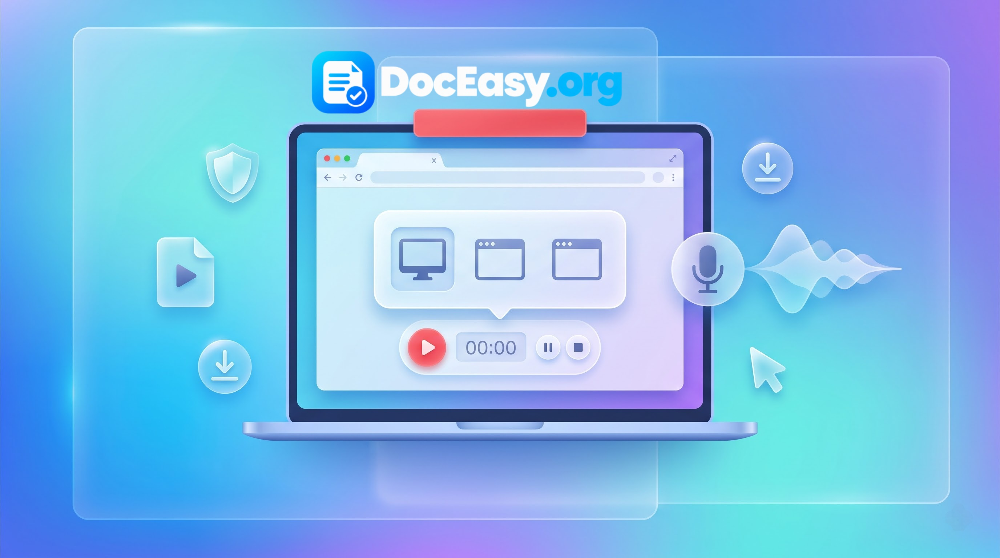

Online Screen Recorder
Record your desktop display, application window, or browser tab with system audio and voice narration — 100% in your browser, private, zero installations.
Your Recording
🔒 Complete client-side privacy: All media frames are synthesized locally inside your browser engine. Zero data is uploaded to remote servers.
Comprehensive Technical Guide: Screen Recording, Web Capture APIs & Browser Architecture (2026)
In the digital workspace, asynchronous visual communication has evolved from a convenient alternative into a core professional requirement. Whether capturing live software demonstrations, conducting remote developer code reviews, archiving corporate video webinars, authoring educational lectures, or documenting reproducible software bugs, screen recording is indispensable. Traditional desktop workflows required installing heavyweight capture utilities like OBS Studio, Camtasia, or Snagit. While capable, these applications demand significant disk storage, complex GPU driver configurations, and elevated administrative permissions.
Conversely, commercial cloud screen recorders often force users to sign up for accounts, enforce strict 5-minute video duration ceilings, stamp invasive marketing logos across the screen, and upload unencrypted workplace footage to remote third-party databases. The DocEasy Online Screen Recorder offers a modern, client-side alternative: a lightweight, zero-install, completely private browser workstation capable of capturing high-definition desktop displays, discrete application windows, and individual browser tabs without cloud latency.

📷 [Demo Image: assets/images/screen-recorder-demo.jpg]Step-by-Step Tutorial: How to Capture Your Screen Online
- Configure Desired Audio Routing: Check System Audio to record internal sound (e.g., video calls, YouTube playback, or game sound) and Microphone to capture voice commentary.
- Initialize Display Capture: Click the purple Start Recording button. The native browser security prompt will appear.
- Choose Display Source: Select between Entire Screen (best for software setups), Window (for single applications), or Chrome/Browser Tab (best for tabbed web apps and webinars).
- Execute Your Recording: The active timer tracks elapsed recording time. Use the Pause button to pause recording during transitions, and click Resume when ready.
- Stop and Export: Click the red Stop button or the operating system's native floating banner. The tool immediately prepares your high-definition WebM file for instant preview and local download.
1. Why Browser-Based Screen Recording Is Restricted on Mobile Phones
A frequent question among users is: "Why does the screen recorder work on my laptop, but fails or disables capture on my Android or iPhone?"
This limitation is not a software bug in DocEasy; it is an intentional, hardcoded security restriction enforced by mobile operating system vendors (Google Android and Apple iOS):
- The W3C
getDisplayMediaSpecification: The World Wide Web Consortium (W3C) specification explicitly permits browser vendors to disable screen capture permissions on mobile devices. Because smartphones display multi-factor authentication SMS popups, banking credentials, personal chat notifications, and authenticator keys in a unified viewport, allowing websites to capture the mobile display introduces significant security and privacy risks. - Process Isolation Architecture: On desktop operating systems (Windows, macOS, Linux), application windows run in discrete desktop surfaces that the browser's display server can isolate. On mobile operating systems, applications execute in sandboxed single-task UI viewports, making selective window capture technically impossible for browser engines.
- The Mobile Alternative: To record on a smartphone, use the native OS screen recorder (built directly into the quick settings panel on Android and the Control Center on iOS). Captured video files can then be edited or converted using DocEasy's Universal Media Editor.
2. Technical Mechanics: Capture Surfaces & MediaStream Routing
The DocEasy Screen Recorder operates across three distinct display surfaces via modern browser media APIs:
| Capture Surface Type | Visual Scope | Audio Capture Fidelity | Ideal Professional Workload |
|---|---|---|---|
| Entire Screen | Complete display canvas (Taskbar, multi-window apps). | Full system stereo mix (Windows/Chrome). | Software installations, multi-app workflows, operating system tutorials. |
| Window | Isolated single program (PowerPoint, VS Code, Word). | Application-specific audio. | Business slide decks, coding reviews, private document demonstrations. |
| Browser Tab | Current active web tab viewport only. | Crystal-clear, synchronized tab audio. | Recording Google Meet sessions, webinars, online classes, and video demos. |
3. Audio Multiplexing: Combining System Sound and Voice Narration
Recording an effective tutorial often requires capturing two separate audio sources simultaneously: the digital sound produced by the computer (system audio) and the presenter's voice (microphone). Standard browser capture APIs treat these as independent streams.
DocEasy solves this by building an in-memory AudioContext routing graph:
- Display Stream Capture: The internal system audio tracks are extracted directly from the
displayStreamobject. - Microphone Interception: When enabled, a secondary
getUserMediaaudio pipeline captures the user's microphone. - Composite Track Mixing: Both audio tracks are combined into a single unified stereo channel before being fed into the media encoder. This guarantees that background video audio and spoken commentary remain synchronized without echo or phase cancellation.
4. Video Codecs: The Power of VP9 and Opus in Modern WebM
Recorded video buffers are packaged into the standardized .webm container format. This architecture utilizes two leading open-source codecs:
- VP9 Video Encoding: Developed by Google as an open-source successor to VP8, VP9 provides compression efficiency comparable to H.265 (HEVC). It preserves crisp text rendering across high-DPI displays while generating compact files (typically just 5 MB to 15 MB per minute of 1080p screen recording).
- Opus Audio Encoding: Regarded as the most versatile lossy audio codec available, Opus dynamically scales bitrates between 6 kbps and 510 kbps, providing clear voice capture and high-fidelity system music reproduction.
5. Client-Side Privacy: Why In-Browser Recording Protects Sensitive Data
Screen recordings frequently contain sensitive workplace information: client databases, source code credentials, private email threads, and proprietary internal dashboards. Using cloud-based screen recording extensions introduces serious data risks:
- Automatic Cloud Uploads: Many browser extensions automatically stream captured screen frames to third-party cloud servers without explicit user confirmation.
- Unprotected Storage Buckets: Cloud storage buckets containing recorded business meetings can be exposed to security breaches and automated web scraping.
- Data Monetization: Unregulated recording platforms may parse user recordings for telemetry analysis and AI model training.
The DocEasy Client-Side Architecture: With DocEasy, all video rendering, canvas compositing, and binary chunk packaging run entirely inside your browser's local memory sandbox. Your video never travels over the network. You can independently verify this: once the page is loaded, disconnect your computer from the internet or enable Airplane Mode, and record your screen freely. The tool will capture, preview, and download your recording completely offline.
6. Frequently Asked Questions (FAQ)
Q1: Is DocEasy Screen Recorder free to use without restrictions?
Yes. The tool is 100% free with no account registrations, premium subscription walls, or arbitrary daily recording limits.
Q2: Why does the video include the 'SCREEN RECORDER | DocEasy.org' watermark?
A clean, translucent branding watermark is composited directly into the lower margin of the recording canvas to authenticate the video origin and support our free, serverless utility platform.
Q3: How can I convert my downloaded WebM recording into an MP4 file?
You can convert your recording in seconds using DocEasy's Universal Media Editor. Simply load your WebM file, navigate to the Convert tab, select MP4, and download your converted file with zero quality loss.
Q4: Can I pause the recording without creating multiple separate files?
Yes. Clicking the Pause button halts the media recording thread and freezes the timer. Clicking Resume continues recording into the same video file seamlessly.
Q5: Why is system audio silent when recording on macOS?
macOS enforces strict kernel-level audio isolation that prevents browsers from capturing desktop-wide audio without specialized virtual audio drivers (such as BlackHole). On macOS, you can capture internal audio reliably by choosing the Browser Tab capture option instead of Entire Screen.
Q6: Will recording a long meeting slow down my computer?
Browser screen recording relies on hardware-accelerated video encoders. To ensure smooth performance during recordings longer than an hour, close unnecessary background applications and keep your laptop connected to power.
Q7: Can I record copy-protected video streams from streaming platforms?
No. Commercial streaming services (like Netflix or Disney+) use hardware-level Digital Rights Management (DRM) Widevine protection. When captured via browser APIs, the video stream automatically renders as a black screen to comply with copyright protections.
Q8: Where is the video file saved on my computer after downloading?
When you click "Download Recording," the file is saved directly to your operating system's default Downloads directory as an uncompressed .webm file.
7. Recommended Multi-Tool Workflow for Content Creators
Screen recording is often the first step in creating educational videos, presentations, or tutorials. Combine DocEasy utilities for an end-to-end workflow:
- Step 1 — Verify Audio Equipment: Test your microphone input levels and clarity before starting using our Mic Test Tool.
- Step 2 — Record Your Session: Capture your screen display, slides, or software demo using the Screen Recorder.
- Step 3 — Trim and Polish: Cut out dead air, remove mistakes, or adjust playback speed using our Universal Media Editor.
- Step 4 — Extract Audio or Create Graphics: Isolate narration tracks into MP3s or extract high-resolution still frames for video thumbnails with our Image Compressor.
8. Summary
Professional desktop screen recording no longer requires expensive desktop software suites or compromising data privacy with cloud-upload converters. The DocEasy Online Screen Recorder delivers an instantaneous, private, and high-definition recording studio directly inside your web browser. Bookmark this page for fast, secure screen capture on any desktop device.